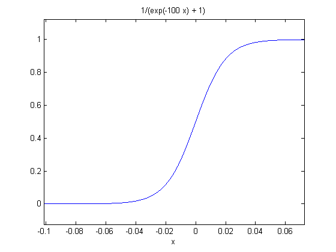

Naive Bayes
Parametric form of Naive Bayes with Gaussian Assumption
Feature vector X \in R^D and Y is a binary random vector.
Naive Bayes assumes the conditional independence of features given Y
Here we have to show that the posterior probability can be written as the posterior of logistic regression.Proceeding with above assumptions.
Using eq. (1.2) in (1.1) and bringing the numerator to denominator simplifies eq. (1) to the following.
Using eq. (1.4),(1.5) and (1.6) in eq. (1.3) we get the simplified form as following
Solving further to simpler terms by assuming the following:
eq. (1.7) can be rewritten using simplified terms like Z_{i1} - Z_{i0} as following.
Product term in denominator of eq. (1.8) can be substituted with summand inside the exponential expression, and \frac{1-\pi}{\pi} can be written as exp\left(-log\frac{\pi}{1 - \pi}\right). Doing above changes to eq. (1.8) it reduces to the following form.
We can see clearly in eq. (1.9) that the posterior probability is taking the form of logistic regression. Comparing with the logistic regression expression. We can write the parameters as follows:
Parametric estimation for Naive Bayes with Gaussian assumption
We have training set of size N of the form (\textbf{x}_\textbf{i}, y_i), where
Since we have to estimate the distribution parameters such as \pi_i, \mu_{jk}, and \sigma_j. We can do this by writing log likelihood and differentiating w.r.t corresponding parameters and set to zero to get the values. Following derivation are for the log likelihood and parameter estimation.
Joint probability can be written as
In above deduction we have used the naive bayes assumption. Now we know the following:
Since we know that log likelihood is the log of joint pdf. We can take the log on both side of eq. (1.10) to get the log likelihood.
Suppose there are m data points with label 1 and N-m with label 0, above equation can be rewritten as following:
Calculating MLE for \pi:
Equating the above equation to zero and solving for \pi
So the likelihood parameter estimation of \pi is:
Likelihood for \mu_{jk}:
We can do this in two parts, k = 0 and k = 1 for k = 0, we shall only have the fourth term in partial differentiation, other term will give zeros.
From above assumption we know the count of zero labels are N-m Solving above equality gives us the following
which gives us
Similarly we get the estimate for \mu_{j1}
Likelihood for \sigma_{j}:
Equating it to zero will give the following:
Nearest Neighbor
Feature weighting in low dimension
Feature weighting is required in case of noise, because noise affect the euclidean distance measures which can lead to poor performance of KNN. This is also known as Achilles’ heel of KNN. In case of low dimension D = 3 with discretized values of weights in each dimension. We can do grid search to look for the optimal weights which can give the best training accuracy. The procedure explained below can be used to find the optimal weights for the features. Here we have following assumption
The weights has been discretized to k values. We can just do grid search by using following pseudo code. opt (W) = {} for w_1 = w_{11}:w_{1k}
for w_2 = w_{21}:w_{2k}
for w_3 = w_{31}:w_{3k}
for i = 1:N
for j\neq i = 1:N
compute d(X_i, X_j)
end
end
Compute the training accuracy and update opt(W) if accuracy is
better.
end
end
end
For this approach we can also use dynamic programming to reduce the computation, we can maintain the NxNxD matrix with entries of euclidean distances of feature vectors. Afterwards we can use this matrix as lookup table and just multiply with the weights to get the weighted feature distance. Using the Dynamic programming approach will lead to following complexity: Time complexity:
Space complexity:
Feature weighting in higher dimensions
In higher dimension above approach of finding optimal weight will lead to exponential time complexity O(k^D). This is curse of dimensionality. As being instructed by TA that we do not have to use any statistical approach to construct the method for assigning weights to features (We have to design algorithm). If we present the weighted distances calculation in matrix form, it will appear as follows:
We do above calculation for every data point. Since there are k^D possible matrices [w_1 ... w_D ], we can not calculate this in polynomial time. One way to select meaningful features from the haystack is to calculate the training accuracy on each individual feature by setting other’s weight to zero. we assign the weight to be training accuracy of that individual feature. We can decide how many feature we have to take into consideration. This will result into the limited features with weight assigned on each of them. 2nd method Objective function for above problem will look like following:
The characteristic of above objective function is a curve in higher dimension with multiple local minimum. We can use the gradient descent approach to find the local minima’s we can start with different set of random weight vectors and try to find the different minimum, select the best one out of these and return those weight vectors as weighted feature vector. This is a polynomial time algorithm, but of course this may not give the optimal solution.
Logistic regression
Negative log likelihood or Loss function
We know that
Writing the negative log likelihood in simpler form using above expression
Proof for convexity of loss function
To prove the convexity we are going to show that the hessian matrix will be positive semidefinite. In order to make the derivation simpler we are going to use the property of convex functions. If f(x) and g(x) are two convex function then their sum h(x) is also going to be the convex function Proof: As we know from the property of convex function
Adding above two equations we get the following:
So h(x) is also convex. Multiplying by any positive constant preserves the convexity. Considering just one term from loss function.
If we prove that $T(\textbf{w,x},y) $ is convex then we can say that \mathcal{L}(\textbf{w}) is convex (by above proved lemma).
Finally we get:
We need to find the hessian(H) of this which is basically DxD matrix and the element H(j,k) is:
Now calculating the H(j,k). Calculating the first derivative.
Differentiating above w.r.t. w_k
Note: \sigma(x) >= 0 \hspace{8pt} \forall x
If we fill out the hessian matrix it will look like following:
Let $ K = \sigma(\textbf{w}{T}\textbf{x})*(1-\sigma(\textbf{w}{T}\textbf{x}))$ which is always greater than or equal to zero, matrix in above expression can be decomposed into XX^T where X is a column matrix. So H can be rewritten as
where
H is a positive semidefinite matrix because if we take any vector V and calculate V^THV then it is always $>= 0 $. Following is the proof.
Since the hessian is PSD we can say that function is convex. Referring to eq.(3.2) the loss function is just the linear combination of T(.). As we proved in the lemma that sum of convex functions is a convex function. Hence it is proved that the loss function is convex.
Magnitude of optimal w
Considering the binary logistic regression and samples are linearly separable.
When sample points are linearly separable then the features determine the label deterministically, it implies that given the feature vector (with true label 1) the regression model should predict the label with probability close to 1, and if the feature vector belongs to label 0 then model should predict the probability close to zero. Lets look at the logistic regression model
For linearly separable data P (Y = 1 | X) should either be 0 or 1 in principle. This implies that \textbf{w}^{T}\textbf{x} should either goes to -\infty or \infty irrespective of \textbf{x}
both of above statement implies for perfect Logistic regression classifier ||\textbf{w}||^2 should tend to infinity for above two statements to be valid. Following figure can explain the behavior of \sigma (.) on different values of w.

At high value of w (Fig.3), we can see the strong confidence of taking the decision (no value of \sigma(.) lying between 0 and 1).
Regularized logistic regression
Since optimal \textbf{w} \longrightarrow \infty, in order to handle the numerical instability the regularization term is being added to the loss function, and the regularized linear regression looks like following:
Computing gradient w.r.t. \omega_i. Referring to eq. (3.2) and the first derivative of T(\textbf{w,x},y)
We have already calculated the term \frac{\partial T(\textbf{w,}\textbf{x}_{\textbf{i}},y_i) }{\partial \omega_j} in the process of proving the hessian matrix to be PSD. We can just plugin that term here. After plugging in the term we get the following :
Further simplifying above equation( x_j cancels out ).
Unique solution of the regularized loss function
Since we have already proven that the loss function without regularization is convex and the regularization term is also convex (because \lambda > 0 and ||\textbf{w}||^2 > 0) so the linear combination will always be convex. There will be \textbf{w}^* for which
We can start at any \textbf{w}_0 and reach \textbf{w}^* by using gradient descent approach.
Decision Tree
Building a decision tree
Selection of predictor to form the decision tree We shall be choosing the predictor which can maximize the information gain.
Where H(Target) is the entropy of target and H(Target|Predictor) is conditional entropy over predictor which is basically weighted sum of entropies of each branch after splitting using the predictor Here we have
Looking at eq. (4.1) and (4.2) we can say that the predictor which gives minimum conditional entropy will lead to maximum information gain. So we just calculate the conditional entropy and decide the predictor to do the splitting in order to form decision tree.
Case 1: Choosing Weather as root for sunny branch the uncertainty will be following:
for rainy branch the uncertainty will be following:
the condition entropy would be the weighted average over the branches:
Case 2: Choosing Traffic as root for heavy branch the uncertainty will be following:
for light branch the uncertainty will be following:
the condition entropy would be the weighted average over the branches:
So we choose the Traffic predictor as the root of decision tree because it will has the maximum information gain.
Relationship between two decision trees
T1: Given the data, the decision tree has been built on some parameter \theta. T2: The data has been normalized by subtracting the mean and divided by variance. The tree has been built on this new normalized data.
T1 and T2 will be same if the parameters used in building the decision tree is function of data points else it will be different. Here is a simple example when T1 and T2 can be different suppose we have five measurements of temperature as following
Now we choose a parameter for splitting is T<0 belongs left subtree and T>0 to right. Lets call this T1. The mean of above data set -15, the variance is always going to be positive, so it is not going to make change, for this reason I am ignoring the variance. Let the variance = k. The new data set will look like following:
Now if you use the same parameter to build the new tree we will have one data point on left subtree and 4 data points on right subtree. Lets call this T2. We can say for sure that T1 and T2 are different. Since we had the splitting parameter independent of the data points.
In case of parameters being dependent on the data points, the aforementioned transformation will not change the characteristics of data in new setting. If we expand the transformation of data point, it will look like following:
So it is one to one mapping from old reference system to new one ( scaled by \frac{1}{\sigma^2} and then subtracted by \frac{\mu}{\sigma^2}). So the order of data points remain the same in new reference system and the same effect will reflect to the corresponding parameter calculations. In conclusion the new tree T2 will be same as T1.
Comparison of Gini index and Cross entropy
We are given:
Programming
5.4 Performace comparision
In case of Naive bayes real valued feature has been used. I am changing the code now, so I can not attach the new values, since it was informed just one day before the assignment submission. I will try my best to modify the code and submit the electronic version compatible with binary feature support. But I believe the accuracies will remain the same. Please take this into consideration. The tables below contain the performance of different methods.
K Train accu. Valid accu. Test accu.
[0.5ex] 1 77.7895 75.5784 79.4344 3 83.1579 80.4627 86.3753 5 86.6316 83.2905 90.7455 7 88.4211 84.0617 89.2031 9 88.6316 86.8895 89.4602 11 89.0526 86.3753 87.9177 13 188.4211 85.6041 87.9177 15 87.0526 82.7763 86.3753 17 85.8947 82.5193 86.1183 19 85.2632 82.2622 85.3470 21 85.3684 80.9769 84.8329 23 84.5263 82.5193 84.3188 [1ex]
: Performance at kNN at different values of k
MinLeaf Train accu. Valid accu. Test accu.
[0.5ex] 1 96.7368 93.3883 94.7636 2 96.7368 93.3883 94.7636 3 96.5263 93.9409 94.7636 4 96.5263 93.9409 94.7636 5 96.3158 94.1839 95.0642 6 96.2105 94.6859 94.8224 7 96.0000 94.9121 94.8797 8 95.8947 95.1871 95.3046 9 95.2632 94.6185 94.2199 10 94.7368 93.8334 94.2786 [1ex]
: Decision Tree with different MinLeaf (Gini Index)
MinLeaf Train accu. Valid accu. Test accu.
[0.5ex] 1 97.0526 93.3505 94.2163 2 97.0526 93.3505 94.2163 3 96.8421 93.9032 94.2163 4 96.8421 93.9032 94.2163 5 96.6316 94.1462 94.5168 6 96.5263 94.6482 94.2750 7 96.3158 94.8744 94.3323 8 95.8947 95.1871 95.3046 9 95.2632 94.6185 94.2199 10 94.7368 93.8334 94.2786 [1ex]
: Decision Tree with different MinLeaf (Cross Entropy)
Method Train accu. Valid accu. Test accu.
[0.5ex] Naive Bayes 87.05 83.80 83.80 Logistic reg 83.89 81.49 85.35 [1ex]
: Performance of Naive Bayes and Logistic Reg.
5.5 Decision Boundary
As we can see in the figure when the value of K increases, the decision boundary smoothen out. As we can see in case of K = 20, very less red data points lying in the blue region and just one chunk of blue point lying on left bottom of the figure.